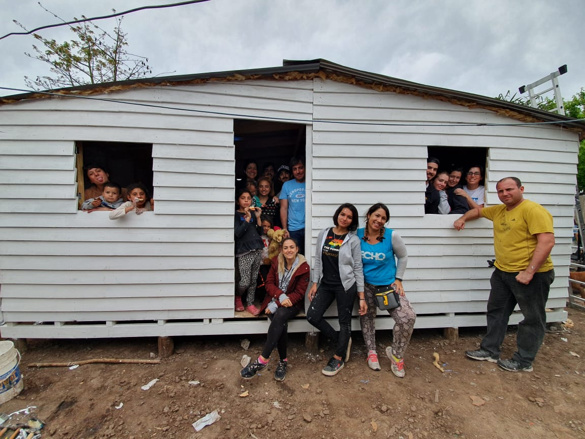
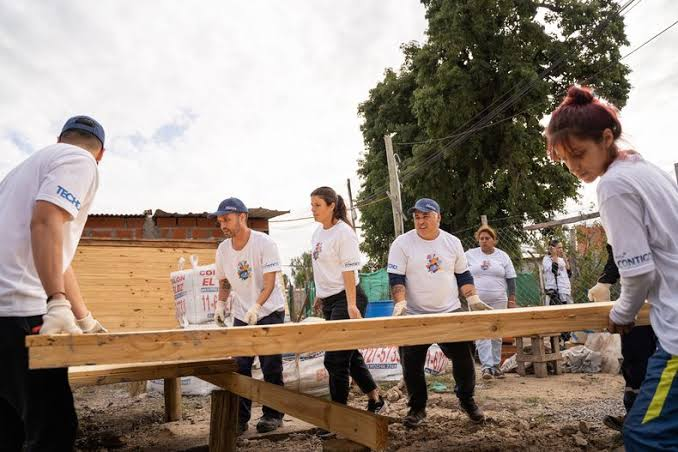
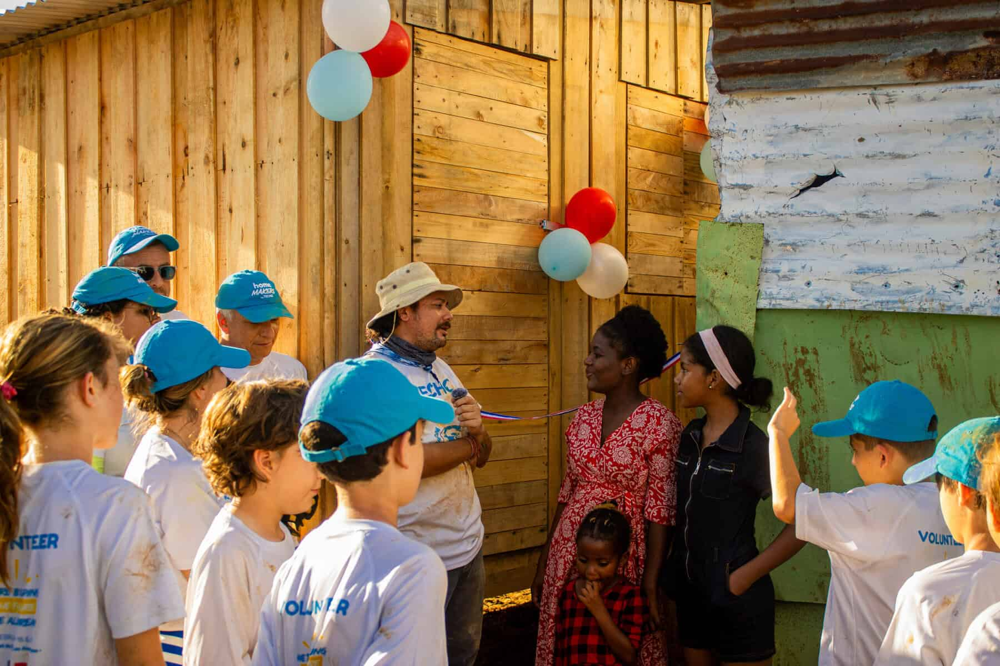
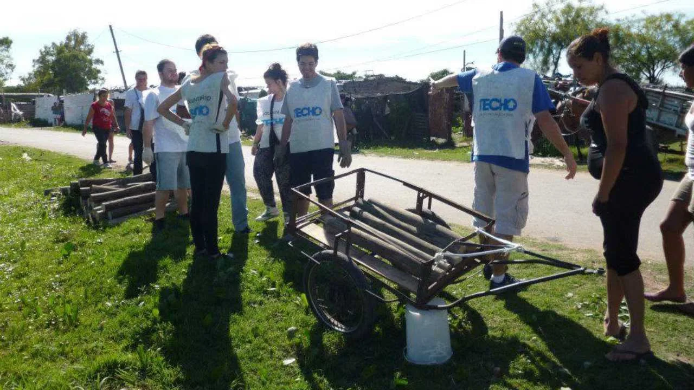

Sábado
Construcción de vivienda
Punto de encuentro: Plaza Moreno, 8:00 h
Jornada completa junto a una familia del Barrio Evita para levantar su vivienda de emergencia.
Inscribirme a Construcción de viviendaVoluntariado en barrios populares
Cada fin de semana, jóvenes voluntarios y vecinos de los barrios trabajan codo a codo en viviendas, proyectos comunitarios y mesas de trabajo. No hace falta experiencia: solo ganas.

TECHO es una organización de la sociedad civil latinoamericana que busca superar la pobreza en asentamientos informales a través del trabajo conjunto entre sus habitantes y jóvenes voluntarios.
Trabajar sin descanso en los asentamientos más excluidos para superar la pobreza, junto con las familias que viven en ellos y con jóvenes que se comprometen a transformar su realidad.
TECHO llegó a Argentina en 2003, con sus primeros pasos en Córdoba. En La Plata trabaja en barrios populares de la periferia; por ejemplo, levantó un salón comunitario en el Barrio Evita de Altos de San Lorenzo con jornadas de voluntariado de fin de semana.

Elegí una actividad, anotate y nos vemos en el punto de encuentro.

Sábado
Punto de encuentro: Plaza Moreno, 8:00 h
Jornada completa junto a una familia del Barrio Evita para levantar su vivienda de emergencia.
Inscribirme a Construcción de vivienda
Sábado
Punto de encuentro: Terminal de La Plata, 14:00 h
Encuentro con vecinas y vecinos para priorizar juntos los próximos proyectos del barrio.
Inscribirme a Mesa de trabajo comunitaria
Domingo
Punto de encuentro: Facultad de Humanidades (UNLP), 9:00 h
Recorremos el barrio casa por casa para conocer necesidades y planificar el trabajo del año.
Inscribirme a Jornada de relevamientoEste finde no hay actividades cargadas. Seguinos en redes para enterarte de las próximas.
+15.600
viviendas de emergencia construidas en Argentina
+40.000
voluntarios participaron de nuestras actividades
3
líneas de trabajo: vivienda, infraestructura y organización barrial
2003
año en que TECHO llegó a Argentina
Sumate a una actividad de fin de semana. No necesitás experiencia previa.
SumateCon una donación puntual financiás materiales para viviendas y proyectos.
DonáUn aporte mensual nos permite planificar el trabajo en los barrios a largo plazo.
Quiero ser socioEmpresas e instituciones pueden acompañar proyectos con voluntariado corporativo o aportes.
EscribinosLas actividades salen desde distintos puntos de la ciudad de La Plata, Buenos Aires.